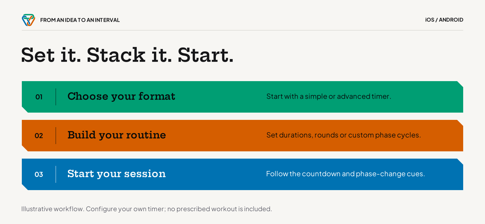
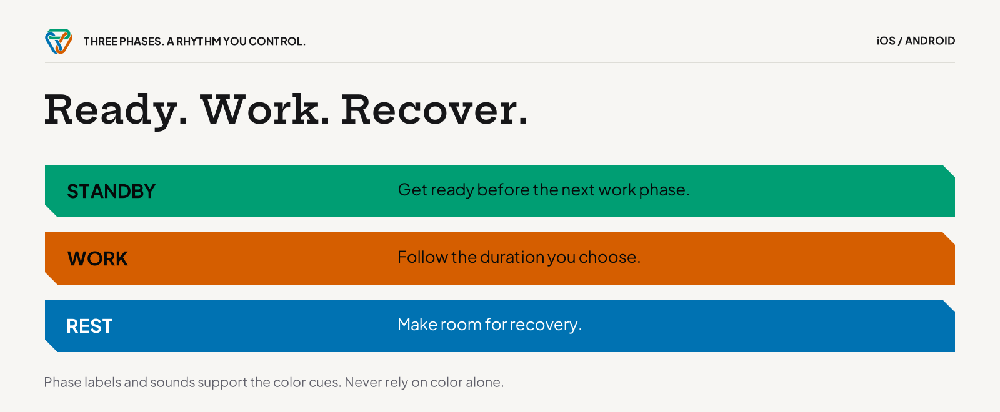

Standby
Get started
- Open Timed. Your saved timers appear on the home screen.
- If the list is empty, create a simple or advanced timer.
- Tap a timer to run it, or use edit / delete on the row.
Timed does not ship pre-built exercises. You create and delete your own timers and sets.

Work
Simple timers
A simple timer is the classic interval shape:
- Standby — optional get-ready time before the first work bout
- Work — effort interval
- Rest — recovery between rounds
- Rounds — how many work bouts to run
Rest is skipped after the last round. Save the timer with a name you will recognize later.

Rest
Advanced timers
Advanced mode builds a phase stack you control:
- Add standby, work, or rest phases in any order
- Set each phase duration
- Drag to reorder the stack (fully rounded rows while dragging)
- Set cycles to repeat the whole stack
Delete any phase you do not need. Keep at least one phase with a duration greater than zero.
Work
Running a workout
- Open a timer from home.
- Tap Start. The screen fills with the current phase color.
- Use Pause / Resume, Skip to jump ahead, or Reset to return to the first phase.
- When the sequence finishes, the screen shows Done and you can restart.
Large Hepta Slab digits show time left in the phase. An “up next” strip previews the following block.
Standby
Sounds
By default Timed plays:
- A cue when a phase begins
- Short beeps in the last three seconds
- A completion sound when the workout ends
Turn these on or off in Settings. Lowering music during a workout and vibrate-on-alert are saved preferences for upcoming builds.
Rest
Settings
Open Settings from the gear on the home screen.
Appearance
Choose Light or Dark. Timed does not follow the system theme — the choice is yours and stays until you change it.
Sound
- Alert sounds — phase changes and complete
- Countdown beeps — last three seconds
- Lower music during workout — preference saved; audio ducking wiring comes next
- Vibrate on alert — preference saved; haptics wiring comes next
Work
Install
Android release builds are on GitHub Releases (.apk for direct install, .aab for Play upload).
iOS release packages need a Mac with Xcode signing. When an IPA is published, it will appear on the same Releases page.
Source and issue tracking live in the Timed repository.